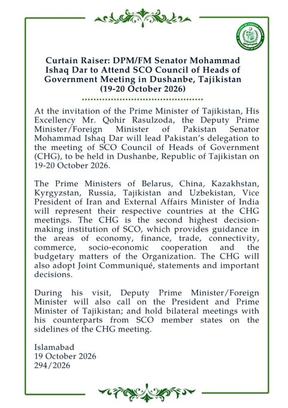

@ForeignOfficePk
📝 原文: PR No./Curtain Raiser: Deputy Prime Minister/Foreign Minister Senator Mohammad Ishaq Dar@MIshaqDar50to Attend SCO Council of Heads of Government Meeting in Dushanbe, Tajikistan (19-20 October 2026)
🇨🇳 译文: PR No./Curtain Raiser: Deputy Prime Minister/Foreign Minister Senator Mohammad Ishaq Dar@MIshaqDar50to Attend SCO Council of Heads of Government Meeting in Dushanbe, Tajikistan (19-20 October 2026)



🕒 2026-10-19T06:59:03+00:00